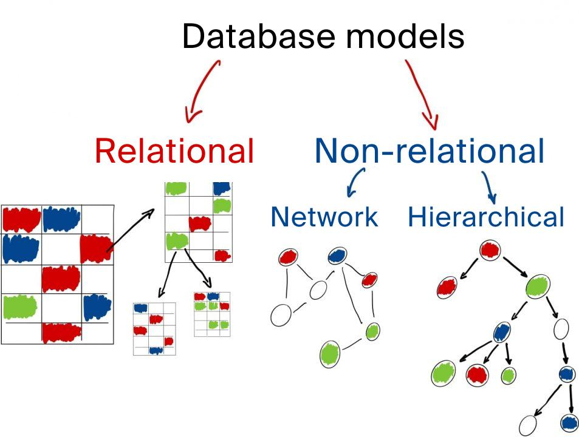

Що таке база даних?
База даних — це організована сукупність даних, призначена для зберігання, пошуку та обробки інформації.
Приклади використання
| Система | Дані |
|---|---|
| Електронний журнал | Оцінки та відвідування |
| Соціальна мережа | Профілі користувачів |
| Інтернет-магазин | Товари та замовлення |
Що таке NoSQL?
NoSQL (Not Only SQL) — це клас нереляційних баз даних, створених для роботи з великими обсягами різнорідної інформації.
Переваги NoSQL:
- Масштабованість
- Висока швидкодія
- Гнучка структура даних
- Робота з Big Data
Документно-орієнтовані бази даних
Дані зберігаються у форматі JSON.
{
"name": "Марія",
"age": 16,
"class": "10-А",
"city": "Київ"
}
Порівняння SQL та NoSQL
| SQL | NoSQL |
|---|---|
| Таблиці | Документи, графи |
| Фіксована схема | Гнучка схема |
| Вертикальне масштабування | Горизонтальне масштабування |

Відео: Різниця між SQL та NoSQL
Контрольні запитання
- Що таке NoSQL?
- Які типи NoSQL-баз існують?
- Що таке JSON?
- У чому різниця між SQL та NoSQL?